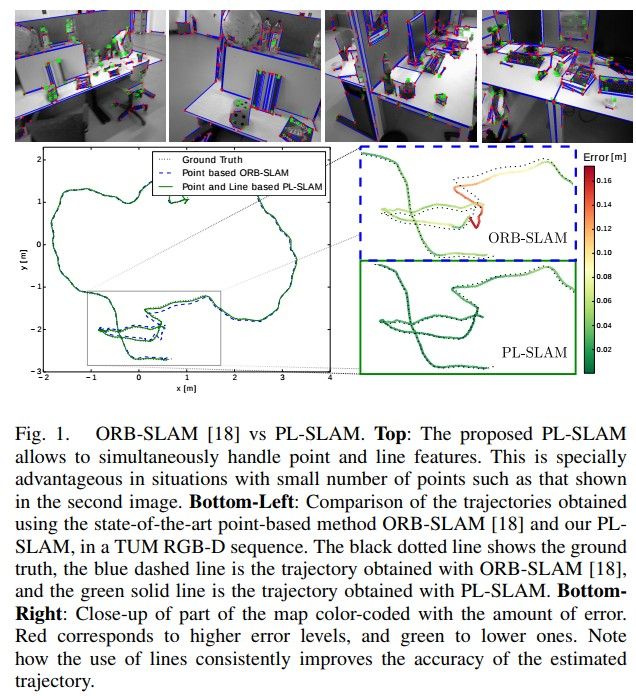

最大子序列和¶
- 相关题目
题解¶
一、动态规划¶
- 思路
假设 nums 数组的长度是 n，下标从 0 到 n-1。
用 f(i) 代表以第 i 个数结尾的「连续子数组的最大和」
\[\mathop{max}\limits_{0 \le i \ le n-1}\{f(i)\}\]只需要求出每个位置的 f(i)，然后返回 f 数组中的最大值即可。
考虑 nums[i] 单独成为一段还是加入 f(i−1) 对应的那一段，这取决于 nums[i] 和 f(i−1)+nums[i] 的大小。
动态转移方程为：
\[f(i) = max\{f(i-1) + nums[i], nums[i]\}\]- 解法
用一个 f 数组来保存 f(i) 的值，用一个循环求出所有 f(i)。
f(i) 只和f(i−1) 相关，于是我可以只用一个变量 pre 来维护对于当前 f(i) 的 f(i−1) 的值。
注解
类似滚动数组
- 代码
class Solution { public: int maxSubArray(vector<int>& nums) { int pre = 0, maxAns = nums[0]; for (const auto &x: nums) { pre = max(pre + x, x); maxAns = max(maxAns, pre); } return maxAns; } };
- 复杂度
时间复杂度：O(n)，其中 n 为 nums 数组的长度。只需要遍历一遍数组即可求得答案。
空间复杂度：O(1)。只需要常数空间存放若干变量。
二、分治¶
- 思路
分治法是将整个数组切分成几个小组，然后每个小组再切分成几个更小的小组，一直到不能继续切分也就是只剩一个数字为止。
问题中的关键就是如何切分这些组合才能使每个小组之间不会有重复的组合（有重复的组合意味着有重复的计算量）
切分分组方法：
以数组 \([-2,1,-3,4,-1,2,1,-5,4]\) 为例，共9个元素。
center = (start + end) / 2，得到中间元素的索引为4，即-1。
拆分如下：
[-2,1,-3,4,-1]以及它的子序列（在-1左边的并且包含它的为一组）
[2,1,-5,4]以及它的子序列（在-1右边不包含它的为一组）
任何包含-1以及它右边元素2的序列为一组（包含左边序列的最右边元素以及右边序列最左边元素的序列）（如 [4,-1,2,1]，这样就保证这个组合里面的任何序列都不会和上面两个重复））
以上的三个组合内的序列没有任何的重复的部分，而且一起构成所有子序列的全集，计算出这个三个子集合的最大值，然后取其中的最大值即为答案。
前两个子组合可以用递归来解决，第三个集合如何求解？（跨中心）：
先计算左边序列里面的包含最右边元素的子序列的最大值，也就是从左边序列的最右边元素向左一个一个累加起来，找出累加过程中每次累加的最大值，就是左边序列的最大值。
找出右边序列的最大值，就得到了右边子序列的最大值。左右两边的最大值相加，就是包含这两个元素的子序列的最大值。
注解
连续子序列的最大和主要由这三部分子区间里元素的最大和得到：
第 1 部分：子区间 [left, mid]；
第 2 部分：子区间 [mid + 1, right]；
第 3 部分：包含子区间[mid , mid + 1]的子区间，即 nums[mid] 与nums[mid + 1]一定会被选取。
对它们三者求最大值即可。
- 代码
class Solution { public: int maxSubArray(vector<int>& nums) { int pre = 0, maxAns = nums[0]; for (const auto &x: nums) { pre = max(pre + x, x); maxAns = max(maxAns, pre); } return maxAns; } };